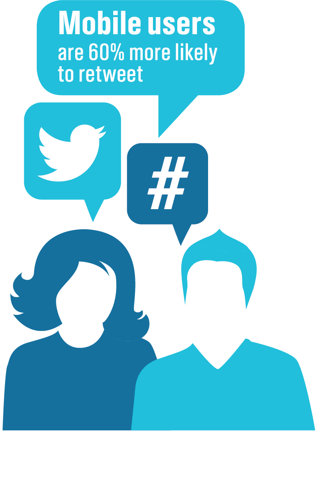

<ion-view>
    <ion-content class="intro" scroll="false" has-bouncing="false">
        <ion-slide-box introSliderHeight on-slide-changed="slideChanged(index)" class="introSlider" scroll="false" does-continue="true">
            <ion-slide class="intro1">
                <div class="row">
                    <div class="col col-90 col-offset-5">
                        <div class="hello">
                            <h1>
                               Hello
                            </h1>
                            <br>
                            <br>
                            <h3><span><strong>This app provides guidance on which social media channels are avaible to you locally and regionally</strong></span></h3>
                            <br>
                            <br>
                            <br>
                            <p style="color:#fff; font-family:'robotolight'">For more information please contact the Castrol Digital Team</p>
                        </div>
                    </div>
                </div>
            </ion-slide>
            <ion-slide class="intro2">
                <div class="row">
                    <div class="redes"></div>
                </div>
            </ion-slide>
            <ion-slide class="intro3">
                <div class="row">
                    <div class="col col-90 col-offset-5">
                        <div class="nubeSocial">
                            <h1>What is Social?</h1>
                        </div>
                        <div class="nubeSocial">
                            <span id="nube">"Websites or Apps that allow people to interact with each other, express their opinion, consume, share and create content"</span>
                            </div>
                    </div>
                </div>
            </ion-slide>
            <ion-slide class="intro4">
                <div class="row">
                    <div class="col col-90 col-offset-5">
                        <div class="policy">
                            <h2 id="titulo">Policy Structure</h2>
                        
                            <h3 id="textPolicy">Castrol will have a global presence across 6 of the main social media networks. <br><br>Avaible today: Twitter, Facebook, Linkedin, Instagram, Google+ and YouTube. <br><br><strong>As a country, you are permitted to apply for approval to launch and manage a Twitter or Facebook channel.</strong><br><br>For the foreseeable future, Linkdin, Instagram, Google+ and YouTube will be managed by the central digital team within Global Marketing. <br><br><strong>If you would like to create any other social channel, please contact the Castrol Digital Team.</strong></h3>
                            
                        </div>
                    </div>
                </div>
            </ion-slide>
            <ion-slide class="intro5">
                <div class="row">
                    <div class="col col-90 col-offset-5">
                        <div class="ipad">
                            <h2 id="tit1">Global Channels</h2>
                            <h2 id="tit2">Local Channels</h2>
                            
                        </div>
                    </div>
                </div>
            </ion-slide>
            <ion-slide class="intro6">
                <div class="facebook">
                    
                    <span style="font-family:font-family: 'robotolight';">The broadest social network; a place where friends and family connect and communicate using status updates, photos and videos.</span>
                    <div class="cuadroFace1">
                        <span style="color:#2655a5; margin-bottom:10px;">Largest opportunities</span>
                        <p style="color:#000;">Communicating with consumers in a non-obtrusive way</p>
                                                
                    </div>
                    <strong class="parrafo2Face">Don´t tag people or pages that aren't relevant to the post</strong>
                    
                </div>  
            </ion-slide>
            <ion-slide class="intro7">
                <div class="facebook2">
                    <div id="face2cont">
                        <strong >Don't ask for Likes, Comments, or Shares</strong>
                        <span>This is one of the factors that the Facebook News Feed considers when it decides what content to show. It will lower the visibility of your content.</span>
                        
                    </div>
                    <strong id="parrafo1Face2">Don't post or tag photos of fans,<br> customers, or employees without permission</strong>
                    <span id="parrafo2Face2">This can cause unnecessary work for our legal team.</span>
                    <div id="face2cont2">
                        <strong>Don't Like your own post</strong>
                        <span>This sends a desperate message to people</span>
                        
                    </div>
                </div>
            </ion-slide>
            <ion-slide>
                <div class="row">
                    <div class="twitter1">
                        
                        <strong>Twitter</strong>
                        <span>Started out as a 140 character micro-blogging service but it has proven itself to be an effective way of communicating with people all over the world  in real-time.</span>
                        <strong>Don't hijack another company's hashtag</strong>
                        <span>Don't hop on a well performing hashtag train to promote irrelevant content it devalues their hastag and, as a result, your brand.</span>
                        <strong>Don't use all 140 characters. Give people room to retweet with a reply.</strong>
                        <span>71-100 characters is recommended through Twitter, so that manual retweets from other users can include commentary.</span>
                    </div>
                </div>
            </ion-slide>
                
            <ion-slide>
                <div class="row">
                    <div class="twitter2">
                        
                    </div>
                </div>
            </ion-slide>
            <!--<ion-slide>
                <div>
                    <div></div>
                </div>
            </ion-slide>-->
        </ion-slide-box>
    </ion-content>
</ion-view>